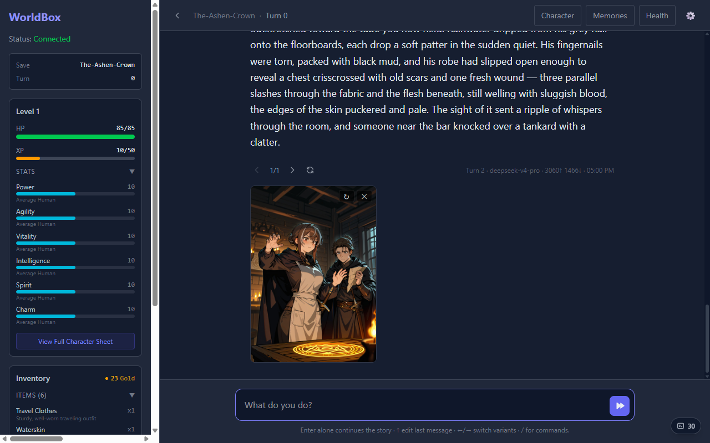
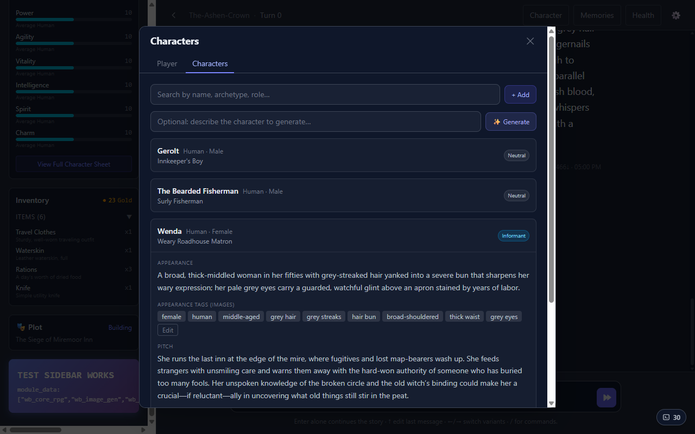
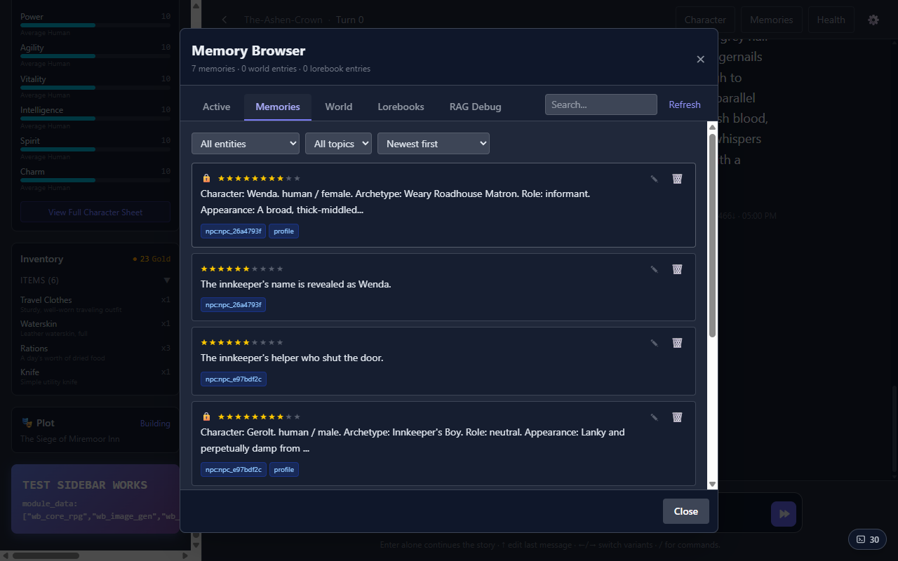
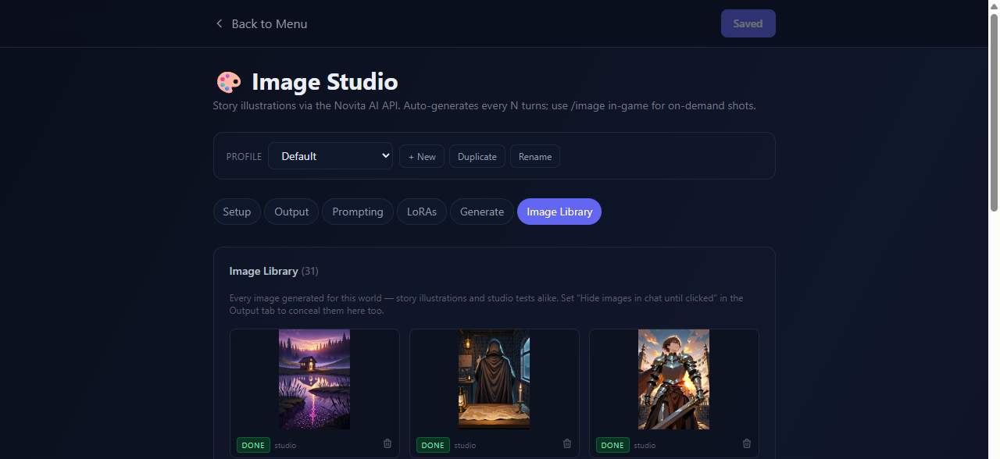
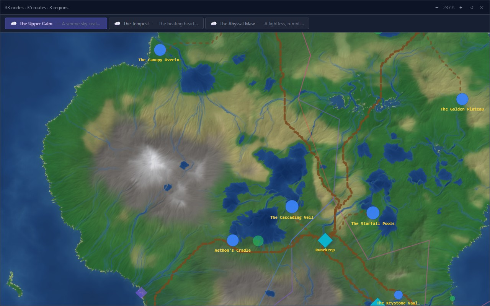

A heavyweight storyteller LLM streams cinematic prose. A fast reader agent extracts what actually happened into structured state changes. Sandboxed Python modules — stats, inventory, NPCs, time, plot — apply the mechanics, and can veto and rewrite the narration when it cheats (spends gold you don't have, contradicts your character, heals wounds that should linger).

Every scene is embedded into vector memory with importance scoring and recency bias, and retrieved into the storyteller's context when it matters. NPCs the story invents on the fly are captured as full character records — appearance, personality, role, and booru-style appearance tags so illustrations stay consistent from scene to scene.


The Image Studio renders story illustrations automatically every few turns (or on demand with
/image) via the Novita AI cloud or any local A1111/Forge-compatible Stable Diffusion
server. Curated one-click installs, per-model-family prompt styles, hires-fix, and v-pred checkpoint
support included.

The world generator cascades your one-line seed into rules, lore, layered geography, regions and terrain — reviewable at every step or generated in one shot — and any story can be set inside it.

Game mechanics live in sandboxed Python modules with a strict manifest contract: they declare what state they consume and produce, run in dependency-ordered parallel tiers each turn, and ship their own React widgets, settings, commands, and prompt blocks. Delete one and the engine keeps running.
| Module | What it does |
|---|---|
| wb_core_rpg | Stats, skills, XP and levels, HP and status effects — the character sheet in the sidebar |
| wb_inventory | Items and money; narration that spends what you don't have gets vetoed and rewritten |
| wb_npc_system | Captures story characters as full NPC records and generates fresh faces over time |
| wb_plot_director | Profiles your play style and weaves evolving, quality-checked plot threads |
| wb_character_tracker | Records lasting changes to your appearance, identity and personality |
| wb_image_gen | Story illustrations via cloud or local Stable Diffusion, with character consistency |
| wb_time_tracker | Tracks in-world date and time as the story advances |
| wb_worldgen | AI world generation: regions, terrain, travel — with its own map UI |
A LangGraph pipeline: slash-command router, parallel module context gathering, streaming storyteller, JSON-extracting reader, module mutations.
Modules inspect each narration and can demand a rewrite with feedback — mechanics stay honest without hand-editing.
LiteLLM routing with per-role model slots: a heavyweight storyteller, a fast reader, cheap module helpers — mix providers freely.
Zip-archived saves with per-module isolated state, mid-story branching, and snapshot-based undo including vector-memory rollback.
The full prompt pipeline is visible and editable — drag blocks, toggle module injections, preview the exact context sent.
FastAPI backend + React frontend. Desktop, LAN play from your phone, or fully on-device via Termux on Android.
git clone https://github.com/FlippRipp/WorldboxAI.git cd WorldboxAI # backend python -m venv venv venv/Scripts/pip install -r requirements.txt # or ./venv/bin/pip on Linux/macOS cp backend/.env.example backend/.env # add your API key # frontend cd frontend && npm install && cd .. # run both ./start.bat # Windows ./start.sh # Linux / macOS
Full setup, architecture docs and the module SDK live in the docs folder.